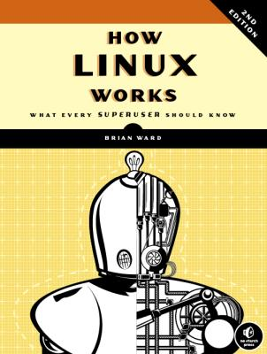

My Notes: "How Linux Works: What Every Superuser Should Know"

1 The Big Picture
1.1 Levels and layers of abstractions in a Linux system
1.2 Hardware: Understanding Main Memory
1.3 The Kernel: Process, memory, and driver management, System calls and support.
1.4 User space
1.5 Users
1.6 Looking Forward
2 Basic Commands and Directory Hierarchy
2.01 The Bourne shell, /bin/sh
2.02 Using the shell: cat, standard I/O.
2.03 Basic Commands: ls, cp, mv, touch, rm, echo.
2.04 Navigating directories: cd, mkdir, rmdir, globbing (wildcards).
2.05 Intermediate commands: grep, less, pwd, diff, file, find and locate, head and tail, sort.
2.06 Changing password and shell
2.07 Dot files
2.08 Environment and shell variables
2.09 The command path
2.10 Special characters
2.11 Command line editing
2.12 Text editors
2.13 Getting online help
2.14 Shell input output: standard error, standard input redirection
2.15 Understanding error messages: Common errors
2.16 Listing and manipulating processes: command options, killing processes, job control, background processes.
2.17 File modes and permissions: modifying permissions, symbolic links.
2.18 Archiving and compressing files: gzip, tar, .tar.gz, zcat, others.
2.19 Linux directory essentials: root, /usr, kernel location.
2.20 Running commands as superuser: sudo, /etc/sudoers
2.21 Looking Forward
3 Devices
3.1 Device files
3.2 The sysfs device path
3.3 dd and devices
3.4 Device name summary: scsi disks /dev/sd*, optic devices /dev/sr*, pata disk /dev/hd*, terminals /dev/tty*, serial /dev/ttyS*, parallel /dev/lp*, audio /dev/snd/*, /dev/dsp, /dev/audio, creating device files.
3.5 udev: devtmpfs, udevd, udevadm, monitoring devices.
3.6 SCSI and the Linux kernel: SCSI, USB, ATA, access methods.
4 Disks and Filesystems
4.1 Partitioning Disk Devices: Viewing and changing a partition table, disk geometry, solid state disks.
4.2 Filesystems: types, creating, mounting, UUID, disk buffering, caching, mount options, /etc/fstab, repairing, special purpose filesystems.
4.3 Swap space: disk partition, file, how much do you need?
4.4 Looking forward: disks and user space
4.5 Inside a traditional filesystem: inode, user space, evolution of filesystems.
5 How the Linux Kernel boots
5.1 Startup messages
5.2 kernel init and options
5.3 kernel parameters
5.4 boot loaders: tasks, overview
5.5 GRUB into: devices, partitions, command line, config, install
5.6 UEFI Secure Boot Problems
5.7 Chainloading other operating systems
5.8 boot loader details: MBR boot, UEFI boot, how GRUB works.
6 How User Space Starts
6.1 into to init
6.2 system v runlevels
6.3 identifying your init
6.4 systemd: units, dependencies, configuration, operation, adding units, process tracking, on-demand and resource-parallelized startup, system v compatibility, auxilarery programs.
6.5 upstart: init, jobs, config, operation, logs, runlevels and system v compatibility
6.6 system V init: startup command, init link farm, run-ports, controlling init.
6.7 shutting down your system
6.8 initial RAM filesystem
6.9 Emergency boot and single-user mode
7 System Configuration: logging, system time, batch jobs, users
7.1 The structure of /etc
7.2 System logging: logger, configuration files
7.3 User management files: /etc/passwd, special users, the /etc/shadow, manipulating users and passwords, groups.
7.4 getty and login
7.5 setting the time: kernel time and time zones, network time.
7.6 scheduling recurring tasks with cron: installing crontab files, system crontab files, the future of cron
7.7 Scheduling One-Tim tasks with at
7.8 Understanding user IDs and User switching
7.9 User identification and authentication: using libraries for user information
7.10 PAM: PAM configuration, notes and passwords
7.11 looking forward
8 A Closer Look At Processes And Resource Utilization
8.1 Tracking processes
8.2 Finding open files with lsof
8.3 Tracing program execution and system calls: strace, ltrace
8.4 Threads: single threaded and multi-threaded processes, viewing threads
8.5 Introduction to resource monitoring
8.6 Measuring CPU time
8.7 Adjusting Process Priorities
8.8 Load Averages: uptime, high loads
8.9 Memory: how memory works, page faults
8.10 Monitoring CPU and memory performance with vmstat
8.11 I/O Monitoring: iostat, per-process I/O utilization and monitoring: iotop
8.12 Per-process monitoring with pidstat
8.13 Further topics
9 Understanding Your Network And Its Configuration
9.1 Network basics: packets
9.2 Network layers
9.3 The Internet layer: viewing your IP address, subnets, subnet masks and CIDR notation.
9.4 Routes and the kernel routing table: the default gateway.
9.5 Basic ICMP and DNS Tools: ping, traceroute, DNS and host
9.6 The Physical layer and Ethernet
9.7 Understanding kernel network interfaces
9.8 Introduction to network interface configuration: manually adding and deleting routes
9.9 Boot activated network configuration
9.10 Problems with manual and boot activated network configuration
9.11 Network configuration managers: network manager interacting, operation, configuration
9.12 Resolving hostnames: /etc/hosts, resolv.conf, caching and zero configuration DNS
9.13 Localhost
9.14 The transport layer: TCP, UDP, and services: TCP ports and connections, establishing TCP connections, port numbers and /etc/services, characteristics of TCP, UDP
9.15 Revisiting a simple local network
9.16 Understanding DHCP: linux dhcp client, linux dhcp servers
9.17 Configuring Linux as a router: internet uplinks
9.18 Private Networks
9.19 Network Address Translation (IP Masquerading)
9.20 Routers and Linux
9.21 Firewalls: Linux firewall basics, setting firewall rules, firewall strategies
9.22 Ethernet, IP, and ARP
9.23 Wireless Ethernet: iw, wireless security
9.24 Summary
10 Network Applications and Services
10.1 The basics of services: a closer look
10.2 Network servers
10.3 Secure Shell (SSH): sshd server, ssh client
10.4 The inetd and xinetd daemons: TCP wrappers, tcpd, /etc/hosts.allow, /etc/hosts.deny
10.5 Diagnostics tools: lsof, tcpdump, netcat, port scanning
10.6 Remote procedure call (RPC)
10.7 Network Security: typical vulnerabilities, security resources
10.8 Looking forward
10.9 Sockets: How processes communicate with the network
10.10 Unix domain sockets: advantages for developers, listing unix domain sockets
11 Introduction to shell scripts
11.1 shell script basics: limitations of shell scripts
11.2 Quoting and Literals: single, double, passing a literal sing quote
11.3 Special Variables: individual, number of, and all arguments ($1, $#, $@), script name ($0), process ID ($$), Exit code ($?)
11.4 Exit Codes
11.5 Conditionals: empty lists, tests, elif, &&, ||, testing conditions, matching strings with case.
11.6 Loops: for, while
11.7 Command Substitution
11.8 Temporary file management
11.9 Here Documents
11.10 Important shell script utilities: basename, awk, sed, xargs, expr, exec.
11.11 Subshells
11.12 incuding other files in scripts
11.13 Reading user input
11.14 When not to use shell scripts
12 Moving Files Across the Network
12.1 Quick Copy
12.2 rsync: basics, copy directory structure, using trailing slash, exclusing files and dirs, transfer integrity, verbose modes, compression, limiting bandwidth, transferring files, further rsync topics.
12.3 Introduction to file sharing
12.4 Sharing files with Samba: configuring server, server access control, passwords, starting server, diag and log files, confiure a file share, home dirs, sharing printers, using samba client, accessing files as a client
12.5 NFS Clients
12.6 Further network file service options and limitations.
13 User Environments
13.1 Guidelines for startup files
13.2 When to alter startup files
13.3 Shell startup file elements: the command path, man page path, the prompt, aliases, the permissions mask
13.4 Startup file order examples: bash, tcsh
13.5 Default user settings: shell defaults, editor, pager
13.6 Startup file pitfalls
13.7 Further startup topics
14 A Brief Survey of the Linux Desktop
14.1 Desktop Components: window managers, toolkits, environments, applications
14.2 A closer look at X Window System: display managers, network transparency
14.3 Exploring X Clients: X Events, Understanding X Input and settings
14.4 The future of X
14.5 D-Bus: system and session instances, monitoring dbus messages
14.6 Printing: CUPS, format converstion and print filters
14.7 Other desktop topics
15 Development Tools: Install with 'apt-get install build-essential'.
15.1 The C Compiler: Multiple source files, header (include) files and directories, linking with libraries, shared libraries.
15.2 make: sample makefile, built-in rules, final program build, staying up to date, command line arguments and options, standard macros and variables, conventional targets, organizing a makefile.
15.3 Debuggers
15.4 Lex and Yacc
15.5 Scripting languages: Python, Perl, other
15.6 Java
15.7 Looking forward: compiling packages
16 Introduction to Compiling Software from C Source Code
16.1 Software Build Systems
16.2 Unpacking C Source Packages: where to starting
16.3 GNU Autoconf: example, installing, configure, environment variables, autoconf targets, autoconf log files, pkg-config
16.4 Installation Practice: where to install
16.5 Applying a patch
16.6 Troubleshooting Compiles and installations: specific errors
16.7 Looking forward
17 Building On the Basics
17.1 Web servers and applications
17.2 Databases
17.3 Virtualization
17.4 Distrubuted and On-Demand Computing
17.5 Embedded Systems
17.6 Final Remarks
BIBLIOGRAPHY
INDEX